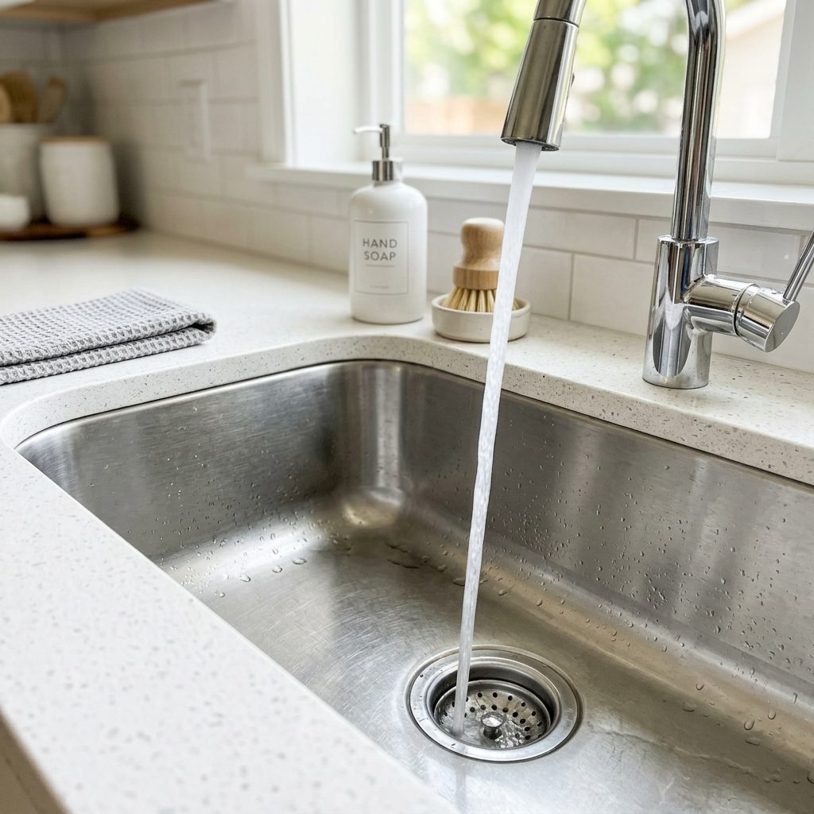
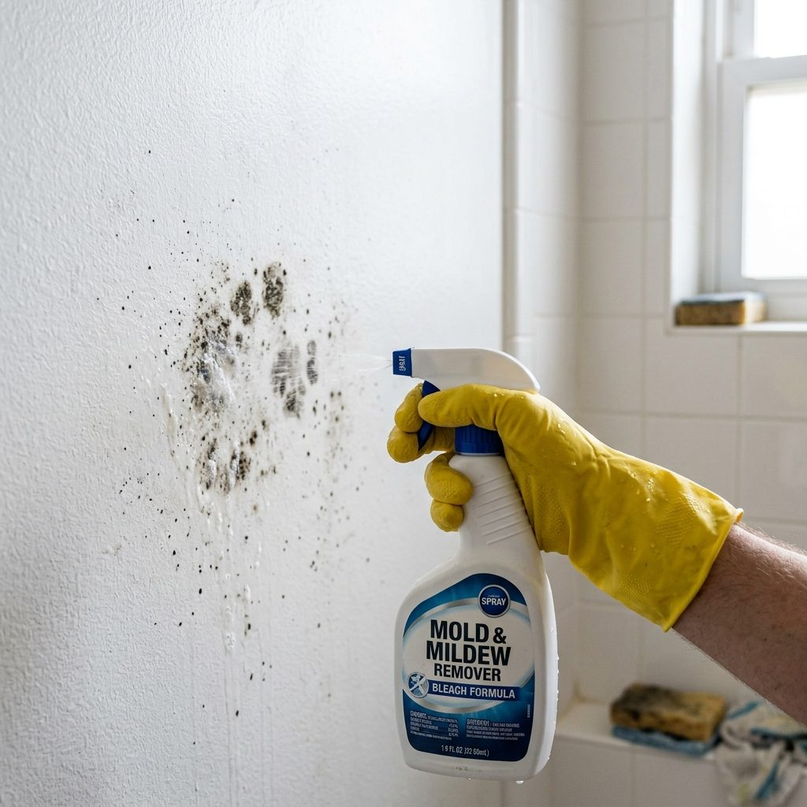

Guias Práticos de Reparos Domésticos e Manutenção

5 maneiras de desentupir pia sem soda cáustica
Consertos Domésticos
Como tirar mofo das paredes: soluções caseiras
Limpeza e Manutenção
10 ferramentas essenciais para ter em casa
FerramentasNavegue por Categorias
Últimos Artigos

Consertos Domésticos
Como consertar fechadura de porta sem serralheiro
Aprenda a lubrificar, alinhar e apertar fechaduras emperradas ou frouxas em minutos.
Consertos Domésticos
5 maneiras de desentupir pia sem soda cáustica
Métodos caseiros seguros e econômicos para desobstruir o encanamento sem danificar os canos.
Limpeza e Manutenção
Como tirar mofo das paredes de forma definitiva
Passo a passo com vinagre branco e água sanitária diluída para eliminar fungos e umidade.
Ferramentas
10 ferramentas essenciais para se ter em casa
Monte seu kit básico de sobrevivência para pequenos reparos domésticos rápidos.